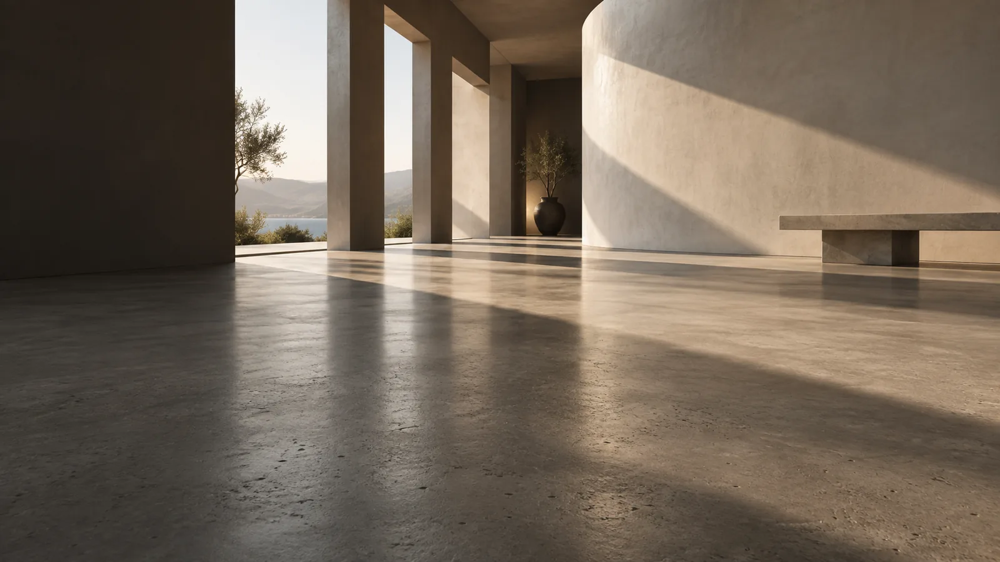

GETTING STARTED 01Your first pour,
Your first pour,
step by step.
How to use self-leveling concrete, from surface preparation to a smooth finish.
Read the application guideFrom your first bag to your final pour. Clear guides, useful calculators, and practical answers for a floor done right.

MEASURE TWICE. MIX ONCE.
Start with a self-leveling concrete estimate. Get a quick bag count here, then fine-tune your coverage and waste allowance in the full calculator.
A LITTLE KNOW-HOW GOES A LONG WAY
How to use self-leveling concrete, from surface preparation to a smooth finish.
Read the application guideUnderstand self-leveling concrete thickness and why product limits matter.
Explore the thickness guideChoose the right underlayment for the floor you want to put on top.
Understand underlaymentLOOK BENEATH THE SURFACE
A smooth floor is a system. Explore a typical concrete subfloor assembly to see how the pieces work together.
Illustrative assembly · Layers not to scale · Follow your product’s instructions
WHEN THE POUR DOESN’T GO TO PLAN
 Illustrative tool render
Illustrative tool renderREADY BEFORE YOU MIX
Primer, mixing equipment, a gauge rake, and a plan. Put your kit together before the clock starts on your pour.
See the tools checklist ↗Understand your concrete mix →GOOD QUESTIONS. CLEAR ANSWERS.
New to floor leveling?
Start with the essentials.
Self-leveling concrete is a flowable, cement-based material used to flatten a prepared subfloor. Most products are underlayments that need a floor covering, rather than a structural replacement for concrete. Read the complete self-leveling concrete guide.
Your floor area, average pour depth, and product’s rated coverage determine the bag count. Add a suitable waste allowance and round up to whole bags. Use the material calculator with the coverage on your product’s data sheet.
Most self-leveling systems require a compatible primer. The substrate and product instructions determine which primer to use and when to pour. Check the primer guide alongside your manufacturer’s instructions.
Standard underlayment usually needs a floor covering. For an exposed finish, choose a product specifically rated as a wearing surface. The underlayment guide explains the difference.
Built around manufacturer documentation and real project questions. Know our sources, understand the limits, and plan with confidence.